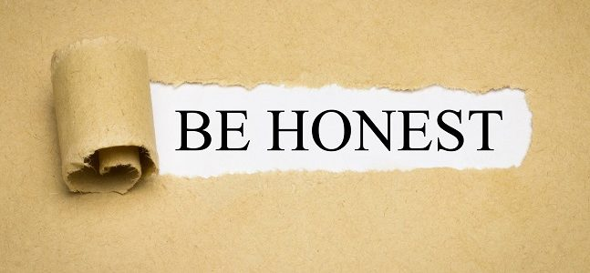

Những Trích Dẫn Nổi Tiếng Về Tính Trung Thực (sưu tầm)

Trung thực là thành thực với người và cả với chính mình, luôn tuân thủ chuẩn mực đạo đức chân thật trong từng lời nói và hành động. Cùng tìm hiểu chủ đề này qua bài viết "Những trích dẫn nổi tiếng về tính trung thực ".
- Dối trá và lừa lọc là hành động của kẻ ngu xuẩn không có đủ trí óc để trung thực - Benjamin Franklin.
- Một cái đầu tỉnh táo, một trái tim trung thực và một linh hồn khiêm nhường, đó là ba người dẫn đường tốt nhất qua thời gian và cõi vĩnh hằng - Walter Scott.
- Con người trưởng thành qua kinh nghiệm nếu họ đối diện với cuộc đời trung thực và can đảm. Đây là cách tính cách hình thành - Eleanor Roosevelt.
- Trong mọi việc phải tuân thủ ba nguyên tắc: sự thật, trung thực, hữu ích - Khuyết danh.
- Yêu khoa học tức là yêu sự thật, bởi vậy tính trung thực là phẩm chất cơ bản của nhà khoa học - Khuyết danh.
- Sự trung thực là viên đá nền của mọi thành công, không có nó, sự tin cậy và khả năng hành động sẽ không tồn tại - Mary Kay Ash.
- Lòng trung thực là chương đầu tiên của cuốn sách trí tuệ - Thomas Jefferson.
- Không di sản nào quý giá bằng lòng trung thực - William Shakespeare.
- Tin tất cả mọi người đều trung thực là ngu xuẩn. Không tin có người trung thực là điều còn tồi tệ hơn - John Adams.
- Bạn không trung thực, trừ phi thỉnh thoảng bạn vẫn thấy xấu hổ vì bản thân - William Faulkner.
- Thật thà là cách tốt nhất – khi có liên quan đến tiền nong - Mark Twain.
- Đại sứ là một người trung thực được cử ra nước ngoài để nói dối và âm mưu vì lợi ích của Tổ quốc - Henry Wotton.
- Trong kinh doanh hiện đại, đáng sợ nhất không phải là kẻ gian lận mà là người trung thực không biết mình đang làm gì - William Wordsworth.
- Những người thực sự trung thực là những người ý thức rõ rệt được khuyết điểm của mình và công khai thừa nhận khuyết điểm ấy - Khuyết danh.
- Người thật sự trung thực là người luôn luôn tự hỏi mình đã đủ trung thực chưa - Khuyết danh.
- Nơi nào có phẩm giá mà lại không có sự trung thực? - Marcus Tullius Cicero.
- Những viên đá nền móng cho thành công cân bằng là trung thực, chí khí, chính trực, niềm tin, yêu thương và trung thành - Zig Ziglar.
- Đi tìm sự giúp đỡ không có nghĩa là ta yếu kém hay bất tài. Nó thường biểu lộ sự trung thực và trí thông minh ở mức cao - Anne Wilson Schaef.
Hy vọng, qua bài viết Những phát biểu hay về trung thực, bạn đã hiểu hơn về chủ đề trung thực. Chúc bạn thành công.